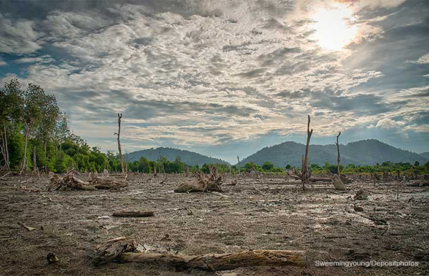

|
 |  |
|---|---|---|
El medio ambiente es el conjunto de elementos naturales como el aire, el agua, los suelos y los seres vivos que interactúan entre sí. Su cuidado es esencial debido a los efectos negativos de actividades humanas, como la contaminación, la deforestación y el cambio climático. El aumento de gases de efecto invernadero está provocando el calentamiento global, fenómenos meteorológicos extremos y la pérdida de biodiversidad. Para protegerlo, es clave adoptar prácticas sostenibles como el reciclaje, el uso de energías renovables y la conservación de los ecosistemas. La acción conjunta de gobiernos y ciudadanos es fundamental para frenar la degradación ambiental y garantizar un futuro saludable para todos. |
La deforestación es el proceso de destrucción o eliminación de los bosques, principalmente por actividades humanas como la agricultura, la ganadería, la minería y la urbanización. Esto provoca la pérdida de biodiversidad, altera los ecosistemas y contribuye al cambio climático, ya que los árboles, al ser talados, liberan dióxido de carbono y reducen la capacidad de absorción de este gas de efecto invernadero.La deforestación también afecta a las comunidades que dependen de los bosques para su sustento y pone en peligro especies animales y vegetales. Combatirla requiere políticas de protección forestal, la promoción de prácticas agrícolas sostenibles y la reforestación. |
El cuidado del agua es esencial para garantizar su disponibilidad a largo plazo, ya que es un recurso limitado y vital para la vida. El desperdicio de agua y la contaminación de ríos, lagos y océanos afectan tanto a los ecosistemas como a la salud humana. Para conservarla, es necesario usarla de manera responsable, evitar la contaminación y promover tecnologías que mejoren su eficiencia, como el reciclaje y el tratamiento adecuado de aguas residuales. Además, proteger las fuentes de agua, como bosques y humedales, es clave para mantener su calidad y cantidad. La educación y la conciencia pública son fundamentales para que todos tomemos acciones que contribuyan a un uso sostenible del agua. |